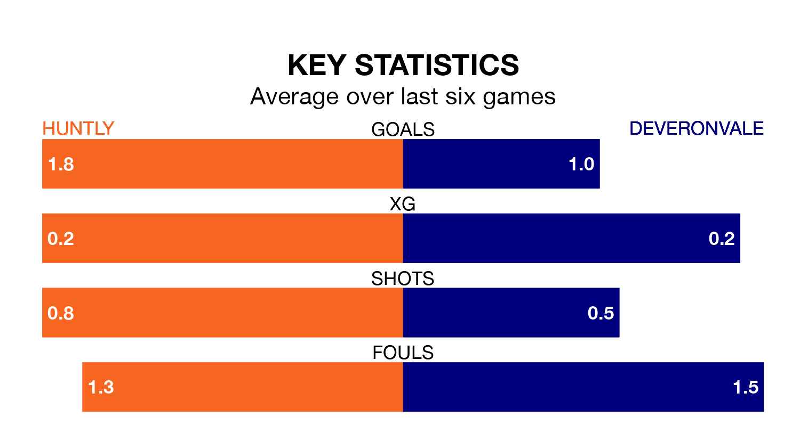

Huntly are on a poor run ahead of hosting Deveronvale at Christie Park on Saturday, with just four points collected from their last six games.
Huntly have picked up one win and one draw in their last six Highland Football League games, and face a Deveronvale side whose last six games have brought one win and two draws.
With 50 goals in 19 games so far this season, Huntly are the league's second-highest scorers with 2.6 goals per game. And they are conceding at an average rate, letting in 37 goals at a rate of 1.9 per game.
Deveronvale, meanwhile, are below average scorers, with 1.2 goals per game, compared to a league average of 1.9. They have conceded 2.4 goals per game.
In the last 10 years, Huntly and Deveronvale have played each other on 14 occasions. They won five each, and they drew four times.
On average, Huntly scored 1.7 goals and Deveronvale 1.5 in those matches.
Their last meeting was on September 16, when Huntly won 6-0 away.
The away team are 14th in the table after 20 games, of which they have won three and drawn six, earning 15 points.
The hosts are six places ahead of Deveronvale in eighth, with nine wins and three draws putting them on 30 points.
Huntly's last match was on January 13, a 3-2 loss against Buckie Thistle.
Deveronvale beat Forres Mechanics 2-0 last time out, also on January 13.
Updated: 09:18 (UTC), 23/01/24